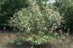

Common name in Tamil : Venkandan
Common name in Telugu : Tella mada
Common name in Singhalese : Manda, mada gas

Diagnostic characters
Botany & morphology
Regeneration
Reproductive biology
Ecology
Distribution
Uses
Stunted trees up to 8 m height with numerous branches; bark flaky, greenish and peeling in patches; pneumatophores pencil like and in large number. Leaves elliptic - ovate, whitish beneath. Inflorescence panicle. Flowers yellow, sessile; fruit capsule, apex apiculate.
Leaves simple, opposite, petiolate, elliptic - oblong or ovate, apex acute, base tapering, 6 - 3 x 2 – 4 cm, margin entire, glabrous, pale green above, whitish beneath.
Inflorescences pedunculate heads.
Flowers sessile, small, 2 – 4 mm long, regular, bisexual, pale-yellow; calyx deeply 5 lobed, tomentose; corolla 4 lobed; stamens 4, short, included; ovary with short style, stigmas 2.
Fruits capsule, ovoid, apiculate, greyish - tomentose, compressed.
Bark flaky, mottled greenish yellow, and peeling in patches.
Pneumatophores finger – like, less than 30cm long.
Cryptovivipary. Germination is epigeal or modified epigeal.
Pollinated by insect and honeybees.
Found as monospecific clumps or stands in highly saline muddy sand.
East Africa to Australia through Egypt, Arabia, Pakistan, India, Sri Lanka, South East Asia and China. In India distributed in the mangrove forests to down southwards from the Sunderbans along the east coast and along the west coast up to Saurashtra. In Sri Lanka it occurs in southwestern part.
Wood is used as fuel, decomposed leaves constitute fish-food; flowers are rich in honey source.
Top of the page